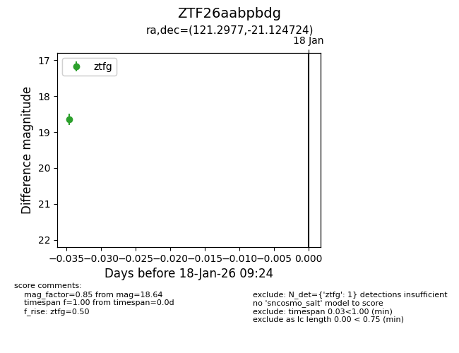
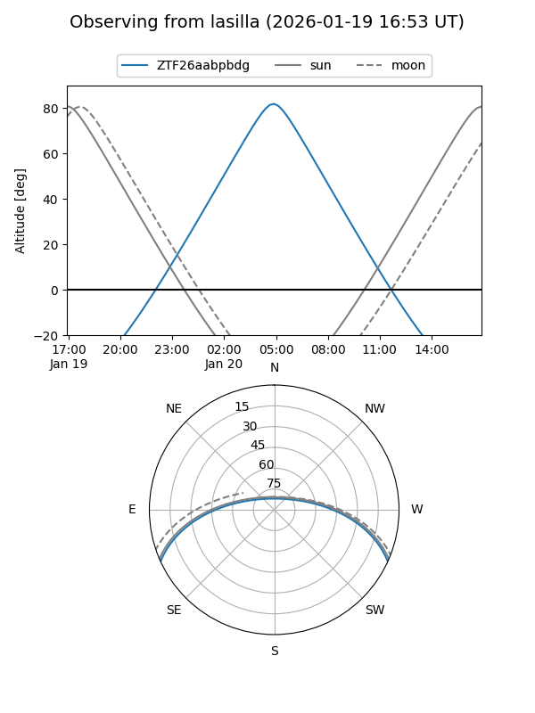
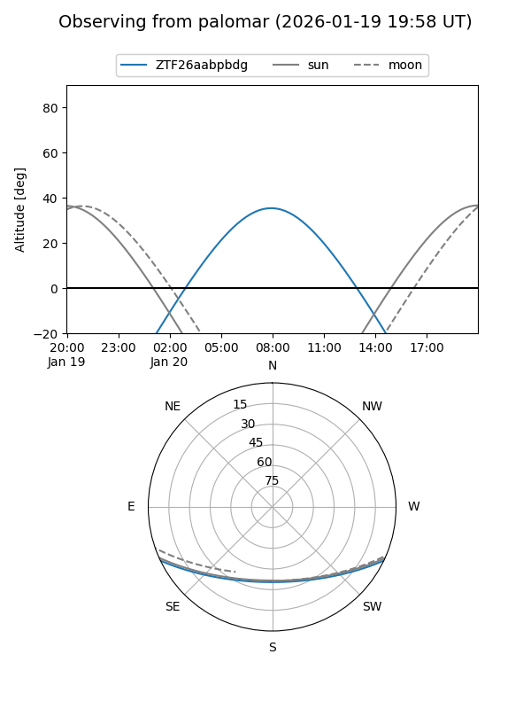

ZTF26aabpbdg
Target ZTF26aabpbdg at 2026-01-20 09:25
Aliases and brokers:
FINK: link
Lasair: link
ALeRCE: link
alt names
ZTF26aabpbdg (ztf,fink_ztf)
Coordinates:
equatorial (ra, dec) = 121.2977,-21.12472
equatorial (HMS+DMS) = 08:05:11.44,-21:07:29.01
galactic (l, b) = (240.1573,+5.63748)
Flags:
Photometry:
last ztfg=18.64
1 ztfg detections
Lightcurve

Visibility


Additional plots